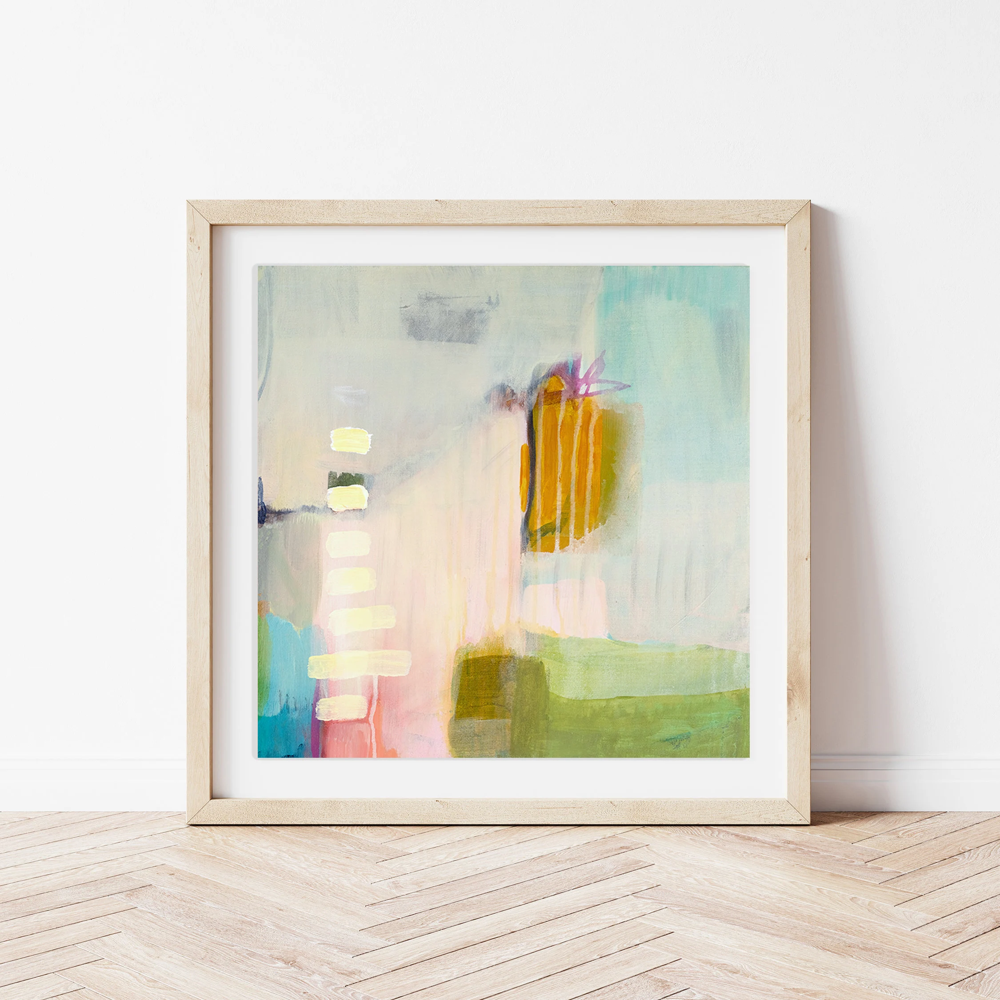

Quiet Beginnings
Every idea starts softly. There is no urgency here, only space to breathe and observe.
Gentle Flow
Not everything needs direction. Some things simply move, guided by feeling rather than rules.

Soft Constraints
Boundaries exist, but they are flexible. Design lives quietly between them.